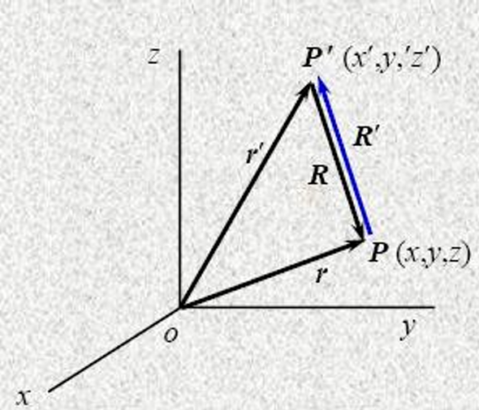
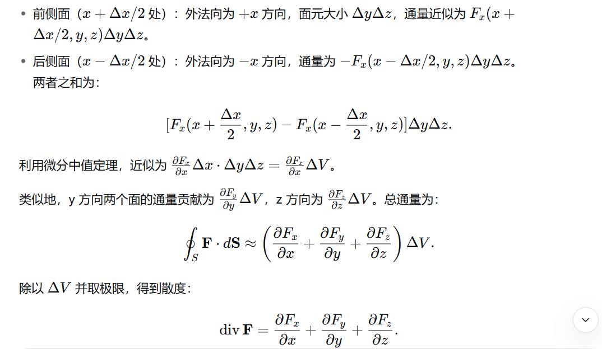
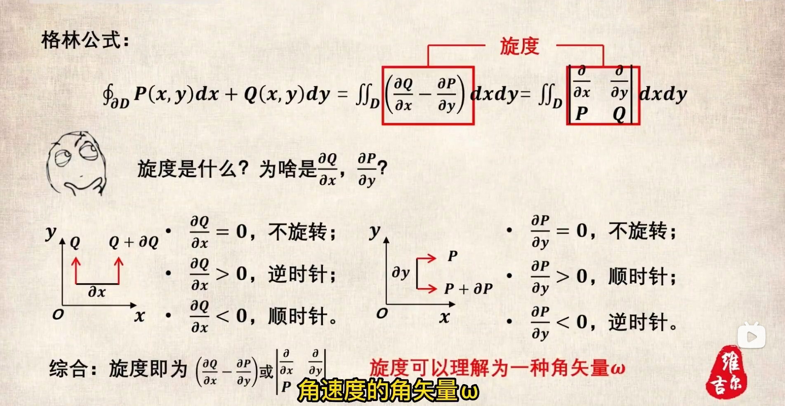
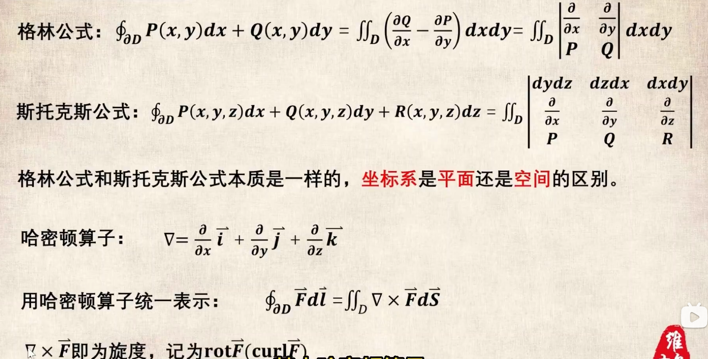

Chapter 1 Vector analysis
课上随笔
1.对矢量场求散度实际上是在求该处的源强度，这也是为什么对E求散度在不是电荷的位置结果为0
2.散度可以描述open field，但是对于闭合场来说，散度总是0，无法用于描述，但是可以使用
标量场和向量场
定义:数学上来说，场是位置的函数
标量场 Scalar field
-
标量:只有大小，如电压U、电荷量Q、电流I、面积S
-
如果在某一时刻，空间中的每一点都对应一个标量值，那么这个标量函数就构成了一个标量场
-
标量场可以用等值面（线）来可视化，比如等温线、等压线
-
常见标量场有:温度场、压力场、密度场
标量场和它的梯度 Scalar field and its gradient
标量场是描述空间中每一点对应一个标量值的物理量或函数。例如温度分布、电势分布等。根据是否随时间变化，可分为两类：
- 恒定标量场(Time-independent constant scalar field)：只与位置有关，表示为 $f(r)$ ；
- 时变标量场(Time-dependent/Time-varying scalar field)：既与位置有关又与时间有关，表示为 $f(r,t)$
等高线&等值面 contour&isosurface
- 用于描述标量场空间分布
- 对于一个标量场$f(r)$,等值面方程由$f(x,y,z)=C(常数)$定义，即所有函数值等于同一常数的点构成的曲面；在二维情况下，称为等值线
梯度 Gradient
-
对于一个标量场$f(x,y,z)$的某一个点P，朝着不同的方向移动，标量f变化的快慢(即方向导数)是不一样的，在所有方向中，存在一个特定方向，使得f值增加的最快，我们就把具有大小（就是这个最大的变化率的值）和方向（就是这个增加最快的方向）的这个矢量，定义为该标量f在P点的梯度，记作 $$ \nabla f $$
-
计算方式为:
- 梯度本质上说是一个向量，它的方向指向函数增加最快的方向，模长也就是大小，表示最大变化率有多大
$$ \nabla f = \left( \frac{\partial f}{\partial x}, \frac{\partial f}{\partial y}, \frac{\partial f}{\partial z} \right) $$
-
为什么是求偏导得到的：
-
数学上的方向导数 Directional derivative:
- 定义式(便于理解含义而非最常见的计算方法)
以三元函数$f(x,y,z)$为例:
有一个点$P_0(x_0,y_0,z_0)$,将它带入方程会得到一个因变量坐标系里的一个点，记为$P'$
而自变量$P_0$沿着不同的方向移动,比如$\vec{u}$(可以是单位向量，也可以不是然后化成单位向量，之所以要化成单位向量下面会说)
自变量的变化会导致因变量即$f(x,y,z)$的变化
则函数f上的点$P_0$沿着$\vec{u}$方向的方向导数定义为:（注意三个要素，函数，函数上的点，点的移动方向）
$$ \lim_{t→0}\frac{f(x_0+\Delta x,y_0+\Delta y,z_0+\Delta z)-f(x_0,y_0,z_0)}{\sqrt{\Delta x^2+\Delta y^2+\Delta z^2}} $$ 其中$\Delta x、\Delta y、\Delta z$等是按照$\vec u$的方向改变的,即: $$ \Delta x=\rho \cos \alpha;
\Delta y=\rho\cos \beta;
\Delta z=\rho\cos \gamma $$
- 上面的可以称为定义式，我们一般计算不用这个，在可微的情况下我们一般这样计算方向导数: $$ \nabla f·\vec{u} $$ 其中$\Delta f$是函数的梯度，带入点坐标则为函数f在点P的梯度，而$\vec{u}$则表示自变量变化的具体方向的单位向量(也就是题干当中常见的，求某点沿单位向量$\vec {u}$的方向导数的$\vec{u}$)
其实意会一下，方向导数就是指的函数的某一自变量点，在定义域里找了一个方向，然后自变量沿着这个方向移动时，因变量的变化率
-
在物理中的梯度(和方向导数的关系)
其实从上文我们可以看出，在函数和点坐标确定后，沿着不同的方向，因变量，也就是函数值，变化率也不一样
而梯度是函数和点确定时，方向导数最大时的自变量移动方向
之所以说是最大，可以看下方的证明:
我们已知，在一个标量场$u=f(x,y,z)$中取一点，沿不同方向变化率是不一样的
从$P_0$出发沿着一个给定方向(用单位向量$\vec{l}=(\cos{\alpha},\cos{\beta},\cos{\gamma})$)移动微小距离$\Delta l$
函数值$u$也会变化，总变化值记为$\Delta l$
根据多元函数的全微分公式，当移动的增量很小时，函数值的总变化量可以近似表示为各个方向变化量之和： $$ \Delta u \approx \frac{\partial u}{\partial x} \Delta x + \frac{\partial u}{\partial y} \Delta y + \frac{\partial u}{\partial z} \Delta z $$ 那么变化率是: $$ \frac{\partial u}{\partial l} \approx \frac{\partial u}{\partial x} \cos{\alpha}+ \frac{\partial u}{\partial y} \cos{\beta} + \frac{\partial u}{\partial z} \cos{\gamma} $$ 也即:任何方向的方向导数，都是三个偏导数的加权和，权重就是方向余弦
将这个式子改写成: $$ \frac{\partial u}{\partial l}=\vec{G}·\vec{l} $$ 其中: $$ \vec{G}=(\frac{\partial u}{\partial x},\frac{\partial u}{\partial y},\frac{\partial u}{\partial z}) $$
$$ \vec{l}=(\cos {\alpha},\cos{\beta},\cos{\gamma}) $$
根据矢量点积的性质: $$ \frac{\partial u}{\partial l}=\vec{G}·\vec{l}=|\vec{G}||\vec{l}|\cos{\theta}=|\vec{G}|\cos{\theta} $$ 由上式可知: 因为$\theta$表示$\vec{G}$和$\vec{l}$之间的夹角
所以当$\vec{G}$和$\vec{l}$方向相同时，变化率最大，所以我们让$\vec{l}$取$(\frac{\partial u}{\partial x},\frac{\partial u}{\partial y},\frac{\partial u}{\partial z})$即: $$ \vec{l}=(\frac{\partial u}{\partial x},\frac{\partial u}{\partial y},\frac{\partial u}{\partial z}) $$ 按照这个矢量的方向，变化率最大
所以用在梯度上时，我们也取这个矢量作为方向，因为这个方向的变化率最大
-
-
梯度的一些性质:
-
梯度向量$\nabla{f}$总是垂直于该点的等值面(或等值线)
因为沿着等值面移动，函数值不变（变化率为 0），所以变化最快的方向必然垂直于等值面
-
梯度的模是标量函数 ff 的最大变化率，即该点的最大方向导数
-
梯度的方向是该点方向导数最大的方向
-
-
例题:
Determine the gradient of the scalar function$ψ=x^2yz$ and the directional derivative at a specified direction. This direction is determined by the unit vector $e_l$ and determine the value of the directional derivative at point (2, 3, 1)
$\vec{e_l}=\vec{e_x}\frac{3}{\sqrt{50}}+\vec{e_y}\frac{4}{\sqrt{50}}+\vec{e_z}\frac{5}{\sqrt{50}}$
确定标量函数的梯度，以及指定方向上的方向导数。该方向由单位向量确定，并求在点 (2, 3, 1) 处方向导数的值
-
先求梯度 gradient通式: $$ \frac{\partial \psi}{\partial x}=2xyz; \frac{\partial \psi}{\partial y}=x^2z; \frac{\partial \psi}{\partial z}=x^2y $$ 故: $$ \nabla \psi=(2xyz,x^2z,x^2y) $$ 即: $$ \nabla \psi=2xy·\vec{e_x}+x^2z·\vec{e_y}+x^2y·\vec{e_z} $$
-
带入点坐标:
又因为点坐标是(2，3，1)，所以可以求出偏导数具体值，进而得到梯度具体值: $$ \nabla \psi=(12，4，12) $$
-
求方向导数:
由单位向量$\vec {e_l}$,，由题干当中说“determine the value of the directional derivative at point (2, 3, 1)”,即求在点(2，3，1)处的方向导数的值: $$ \frac{\partial \psi}{\partial l}=\nabla \psi ·\vec{e_l}=\frac{36}{\sqrt{50}}+\frac{16}{\sqrt{50}}+\frac{60}{\sqrt{50}}=\frac{112}{\sqrt{50}} $$
-
-
梯度的基础运算:
其实我感觉就是求导的规则 $$ \nabla c=0(C是常数)\\nabla cf=c\nabla f \\nabla(f±g)=\nabla f±\nabla g \\nabla(fg)=g\nabla f+f\nabla g \\nabla(f/g)=\frac{g\nabla f-f\nabla g}{g^2} \\nabla f(u)=f’(u)\nabla u $$
位置矢量和相对位置矢量 Position vector&Relative position vector
-
对于坐标轴内有点$P(x,y,z)$和点$P’(x’,y’,z’)$，可以定义位置矢量和相对位置矢量： $$ 位置矢量:\vec r=x\vec e_x+y\vec e_y+z\vec e_z $$
$$ 相对位置矢量 :\vec R=\vec r-\vec r’=(x-x’)\vec e_x+(y-y’)\vec e_y+(z-z’)\vec e_z $$

-
相对位置函数$f(r-r’)$的梯度关系 $$ \nabla f=-\nabla’f $$
-
符号含义:
- $\nabla$表示对未带撇的坐标 r 求梯度（即偏导）
- $\nabla’$表示对带撇的坐标 r′ 求梯度
-
原因: $$ \nabla f=\frac{\partial f}{\partial R}·\frac{\partial R}{\partial r} $$
$$ \nabla ‘f=\frac{\partial f}{\partial R}·\frac{\partial R}{\partial r’} $$
而R对r和r’求导刚好差一个负号
-
-
相对位置矢量$\vec R$及其模长$R=|r-r’|$ $$ \nabla R=\frac{\vec R}{R}=\vec e_R $$ 这里表示对相对位置矢量的模长求梯度
即，位置矢量模长的梯度是位置矢量的单位向量 $$ \nabla \frac{1}{R}=-\frac{\vec R}{R^3}=-\frac{\vec e_R}{R^2} $$ 这个式子是前面那个式子加上梯度基础运算法则(感觉和求导没区别)得出的
两个结论的证明如下:
已知： $$ R=\sqrt{(x-x’)^2+(y-y’)^2+(z-z’)^2} $$ 则对x求偏导: $$ \frac{\partial R}{\partial x}=\frac{x-x’}{R} $$ 这个地方就正常求导就行，然后把分母用R替代就这样了
那么同理对y,z求偏导也是这样: $$ \frac{\partial R}{\partial y}=\frac{y-y’}{R}\ \frac{\partial R}{\partial z}=\frac{z-z’}{R} $$ 三个两合并之后即为: $$ \nabla R=\frac{(x-x’)+(y-y’)+(z-z’)}{R} $$ 同时我们知道: $$ \vec R=\vec r-\vec r’=(x-x’)+(y-y’)+(z-z’) $$ 故: $$ \nabla R=\frac{\vec R}{R}=\vec e_R $$ 根据: $$ \nabla f(u)=f’(u)\nabla u $$ 把$\frac{1}{R}$视作$u$是关于R的函数，可以借助上面的基础运算得到: $$ \nabla \frac{1}{R}=-\frac{\vec R}{R^3}=-\frac{\vec e_R}{R^2} $$
哈密顿算符 Hamiltonian operator
$\nabla$是一个向量微算子，它既不是数也不是函数，是一个运算符号，代表一组求偏导操作 $$ \nabla=\vec{e_x}\frac{\partial}{\partial x}+\vec{e_y}\frac{\partial}{\partial y}+\vec{e_z}\frac{\partial}{\partial z} $$
-
单独存在时无意义，但在运算中视为矢量:
-
它必须作用于某个东西（比如一个函数或一个向量场）才能产生意义
-
虽然它是由微分算符组成的“假”向量，但在运算时，我们必须把它当作一个真正的向量来对待。这意味着它可以进行点乘和叉乘
-
$\nabla$有很多作用对象:
- 梯度:当$\nabla$作用于一个标量函数f
- 散度:当$\nabla$点乘一个向量场$\vec{F}$,衡量场在某点的发散或者汇聚
- 旋度:当$\nabla$叉乘一个向量场$\vec{F}$,衡量场在某点的旋转程度
-
两个重要的恒等式:
- $\nabla·\nabla=\nabla^2$:这是拉普拉斯算符，即梯度的散度
- $\nabla×\nabla=0$:任何标量场的梯度再取旋度，结果恒为零向量。这反映了数学上“梯度场无旋”的性质
关于散度和旋度的知识见后
-
向量场 Vector field
- 如果在某一时刻，空间中的每一点都对应一个矢量，那么这个矢量函数就构成了一个矢量场
- 常见矢量场包括:流速场、电场、磁场
- 矢量场可以用场线（如电力线、磁感线）来表示，线的切线方向表示矢量方向，疏密表示大小
矢量运算
-
加减法(Addition&Subtraction)通常使用平行四边形法则Parallelogram rule,或者正交分解 $$ \vec{A} = \vec{e_x} A_x + \vec{e_y} A_y +\vec{ e_z} A_z \quad |\vec{A}| = A = \sqrt{A_x^2 + A_y^2 + A_z^2} $$
$$ \vec{B} = \vec{e_x} B_x +\vec{ e_y} B_y +\vec{ e_z} B_z $$
$$ \vec{A} \pm\vec{ B} = \vec{e_x} (A_x \pm B_x) +\vec{ e_y} (A_y \pm B_y) +\vec{ e_z} (A_z \pm B_z) $$
$$ |\vec{A} \pm\vec{ B}| = \sqrt{(A_x \pm B_x)^2 + (A_y \pm B_y)^2 + (A_z \pm B_z)^2} $$
-
向量乘法 Products of vector
-
和常数点乘: $$ f\vec{A} = \vec{e_x}f A_x + \vec{e}_y fA_y + \vec{e_z} fA_z $$
-
和向量点乘 dot product:
- 两种计算方法如下:
$$ \vec{A}·\vec{B}=ABcos\theta $$
$$ \vec{A}·\vec{B}=（\vec{e_x}A_x+\vec{e_y}A_y+\vec{e_z}A_z)·（\vec{e_x}B_x+\vec{e_y}B_y+\vec{e_z}B_z) $$
-
特殊的单位向量: $$ \vec{e_x}·\vec{e_x}=\vec{e_y}·\vec{e_y}=\vec{e_z}·\vec{e_z}=1 $$
$$ \vec{e_x}·\vec{e_y}=\vec{e_x}·\vec{e_z}=\vec{e_y}·\vec{e_z}=0 $$
-
交换律 Commutative law: $$ \vec{A}·\vec{B}=\vec{B}·\vec{A} $$
-
分配律 Distributive law: $$ (\vec{A}+\vec{B})·C=\vec{A}·\vec{C}+\vec{B}·\vec{C} $$
-
和向量叉乘 cross product:
- 有三种计算方式：
-
$$
\vec{A}·\vec{B}=AB\sin\theta_{AB}\vec{e_n}
$$
2.
$$
\vec{A}×\vec{B}=（\vec{e_x}A_x+\vec{e_y}A_y+\vec{e_z}A_z)×（\vec{e_x}B_x+\vec{e_y}B_y+\vec{e_z}B_z)
$$
3.
$$
\vec{A}×\vec{B}=\begin{vmatrix}
e_x & e_y & e_z \\
A_x & A_y & A_z \\
B_x & B_y & B_z
\end{vmatrix}
$$
由方式一可以看出自身和自身的叉乘为0平行向量叉乘也是0
- **不满足交换律!!!**：
$$
\vec{A}×\vec{B}=-(\vec{B}×\vec{A})
$$
- 满足分配律:
$$
(\vec{A}+\vec{B})×C=\vec{A}×\vec{C}+\vec{B}×\vec{C}
$$
-
叉乘和点乘混合:
- 标量三重积
$$ \vec{A}·(\vec{B}×\vec{C})=\vec{B}·(\vec{C}×\vec{A})=\vec{C}·(\vec{A}×\vec{B}) $$
表示以 A,B,C 为棱的平行六面体的有向体积
计算法二: $$ \vec{A}·(\vec{B}×\vec{C})=\begin{vmatrix} A_x & A_y & A_z \ B_x & B_y & B_z\ C_x & C_y & C_z \end{vmatrix} $$
- 向量三重积:BAC-CAB法则 $$ \vec{A}×(\vec{B}×\vec{C})=\vec{B}(\vec{A}·\vec{C})-\vec{C}(\vec{A}·\vec{B}) $$
特殊向量
-
位置矢量 Position vector:
对于点P(x,y,z),其位置矢量为: $$ \vec{r}=x\vec{e_x}+y\vec{e_y}+z\vec{e_z} $$ 如果还有另外一点P‘(x’,y’,z’),则两者之间的相对位置矢量为: $$ \vec{R}=\vec{r}-\vec{r’}=(x-x’)\vec{e_x}+(y-y’)\vec{e_y}+(z-z’)\vec{e_z} $$
$$ R=|\vec{r}-\vec{r’}|=\sqrt{(x-x’)^2+(y-y’)^2+(z-z’)^2} $$
Flux line 场线
-
也称向量场的流线，是描述向量场分布的重要概念
-
定义:
对于给定的向量场 F(x,y,z)，流线是一条曲线，其上每一点的切线方向都与该点的向量场方向一致
-
性质:
-
$$ \vec F×d\vec l=0 $$
此处$d\vec l$表示场线上的微小线元，叉乘为0表示场线上每一点的切线方向都与该点的向量场方向一致
-
$$ \frac{dx}{F_x}=\frac{dy}{F_y}=\frac{dz}{F_z} $$
重要的关系式!!!
原因如下:
假设场线为:$\vec r(t)=(x(t),y(t),z(t))$,那么曲线上某点的切向量就是: $$ \frac{d\vec r}{dt}=(\frac{dx}{dt},\frac{dy}{dt},\frac{dz}{dt}) $$ 又因为场线方向(场线上某点的切向量)和（该点所在的）向量场的方向平行，故: $$ \frac{\frac{dx}{dt}}{F_x}=\frac{\frac{dy}{dt}}{F_y}=\frac{\frac{dz}{dt}}{F_z} $$ 化简得: $$ \frac{dx}{F_x}=\frac{dy}{F_y}=\frac{dz}{F_z} $$ 举个例子:
设有一个二维向量场$\vec F=(y,-x)$,那么场线满足: $$ \frac{dx}{y}=\frac{dy}{-x} $$ 可以写成: $$ -xdy=-xdx\ \frac{y^2}{2}=-\frac{x^2}{2}+C\ x^2+y^2=C $$ 这个方程其实就是流线方程，也就是说，场线在这道题的情况下是它表示一族以原点为中心的同心圆，C不同半径不同；
对于向量场而言，这个式子表示向量场$\vec F=(y,-x)$每一条场线都是一个圆，且所有圆圆心都在原点
-
Flux 通量
-
定义:
对于一个向量场$\vec F$，它穿过某个面$S$的场线在它法线的分量(因为我们不是计算有多少条场线穿过了这个面，而是取发现上的分量，也就是垂直穿过的量)，称为通量,定义通量微元为: $$ d\Psi=F_ndS=F\cos\theta dS=\vec F·d\vec S $$
- $F_n$是$\vec F$在法线上的投影
对整个曲面求积分，得到总通量: $$ \Psi=\int _S\vec F·d\vec S $$
- 直角坐标下的表达: $$ 设向量场在直角坐标系中的分量为:\ \vec F(x,y,z)=F_x(x,y,z)\vec e_x+F_y(x,y,z)\vec e_y+F_z(x,y,z)\vec e_z\ 而有向面元也可以写成:\ d\vec S=dydz\vec e_x+dxdz\vec e_y+dxdy\vec e_z\ 那么点积展开为:\ \Psi=\int_S\vec F·d\vec S=\int_SF_xdydz+\int_SF_ydxdz+\int_SF_zdxdy $$
解题技巧
-
$\Psi=\int _S\vec F·d\vec S$这个式子可以改写成$\Psi=\int _S\vec F·d\vec S=\int_s\vec F·\vec nds$,其中，这个$\vec n$就是面的单位法向量
-
面的法向量，可以通过平面方程求得，平面方程的梯度就是面的一个法向量
散度 Divergence
定义:
-
散度（divergence）是向量场的一个微分运算，它描述了向量场在某一点附近的“源”或“汇”的强度
-
设有一个向量场$\vec F$,设有一个向量场 $F$，考虑空间中一点 P，作一个包含 P 的微小闭合曲面 S，其所围的体积为$\Delta V$。则 $F$ 通过 S 的净通量为 $\oint_S \mathbf{F} \cdot d\mathbf{S}$。散度定义为当体积趋近于零时，单位体积的通量极限： $$ \operatorname{div} \mathbf{F}(P) = \lim_{\Delta V \to 0} \frac{1}{\Delta V} \oint_{S} \mathbf{F} \cdot d\mathbf{S}. $$
这个极限与所取曲面的形状无关（只要体积收缩到点 P），它反映了该点处向量场的“发散”程度。
物理意义
- 如果散度为正，表示该点有“源”，向量场向外发散（例如正电荷产生的电场）。
- 如果散度为负，表示该点有“汇”，向量场向内汇聚（例如热流进入冷源）。
- 如果散度为零，表示该点无源无汇，场线连续（如磁场）。
直角坐标系下的表达式
散度的直角坐标系表达式:
$$ div \vec F=\frac{\partial F_x}{\partial x}+\frac{\partial F_y}{\partial y}+\frac{\partial F_z}{\partial z} $$
常用记号$\nabla ·\vec F$
推导过程见下(备考仅需记住上面那个就行，这个不用管)
为了得到具体计算公式，考虑一个以点 $(x,y,z)$ 为中心的小长方体，边长分别为 $\Delta x, \Delta y, \Delta z$，体积 $\Delta V = \Delta x \Delta y \Delta z$。计算通过六个面的通量。
假设场分量为 $\mathbf{F} = (F_x, F_y, F_z)$，且各分量连续可微。先计算通过垂直于 x 轴的两个面的通量：

几个散度的基础关系式:
-
对于相对坐标矢量函数$F(\vec r-\vec {r’})$ $$ \nabla· F=-\nabla’· F $$
-
相对位置矢量$\vec R$的散度: $$ \nabla ·\vec R=3 $$ 在表达式 $\nabla \cdot (\mathbf{r} - \mathbf{r}’)$ 中$\nabla$ 只对 场点坐标 $\mathbf{r} = (x, y, z)$ 求偏导，而源点 $\mathbf{r}’$ 是固定的常数矢量。所以：
$$ \nabla \cdot (\mathbf{r} - \mathbf{r}’) = \nabla \cdot \mathbf{r} - \nabla \cdot \mathbf{r}’ $$
- 第一项：$\nabla \cdot \mathbf{r} = \frac{\partial x}{\partial x} + \frac{\partial y}{\partial y} + \frac{\partial z}{\partial z} = 1 + 1 + 1 = 3$。
- 第二项：由于 $\mathbf{r}’$ 是常矢量（不依赖于 (x, y, z)），其散度为零，即 $\nabla \cdot \mathbf{r}’ = 0$。
因此： $$ \nabla \cdot (\mathbf{r} - \mathbf{r}’) = 3 - 0 = 3. $$
-
标量场与矢量场乘积的散度: $$ \nabla ·(f\vec F)=f\nabla·\vec F+\nabla f·\vec F $$
-
$\frac{\vec R}{R^3}$的散度: $$ \nabla·\frac{\vec R}{R^3}=0,R≠0 $$
- 这里$\vec R=\vec r-\vec{r’}$,$R=|\vec R|$
应用与意义
-
高斯散度定理：将散度的体积分与通过封闭曲面的通量联系起来： $$ \iiint_V \nabla \cdot \mathbf{F} , dV = \oint_S \mathbf{F} \cdot d\mathbf{S}. $$
-
在流体力学中，散度表示流体的膨胀率；在电磁学中，高斯定律就是用散度描述的。
散度和梯度的区别
- 梯度是标量场的性质，梯度本身是一个矢量；散度是矢量场的性质，散度本身是一个标量
- 梯度:当$\nabla$作用于一个标量函数f
- 散度:当$\nabla$点乘一个向量场$\vec{F}$,衡量场在某点的发散或者汇聚
向量场的环量与旋度
环量 Circulation
-
环量的产生是从变力做功中引入的: $$ \Delta A_i \approx F_i \Delta l_i \cos \theta_i = F_i \cdot \Delta l_i $$
$$ A = \lim_{\substack{N \to \infty \ \Delta l \to 0}} \left( \sum_{i=1}^N F_i \cdot \Delta l_i \right) = \int_l F \cdot dl $$
-
涡旋场 vortex field:
如果矢量场的环量不为0，那么则称这个场是涡旋场
它的场源称为涡源 vortex source
-
-
在向量场分析中，环量（circulation）是一个描述向量场沿闭合路径旋转趋势的标量量。它定义为向量场 $F$ 沿闭合曲线 $l$ 的线积分： $$ C = \oint_l \mathbf{F} \cdot d\mathbf{l} $$
-
这个积分度量了向量场沿着路径的“总旋转效应”。如果环量不为零，说明向量场在路径所围区域内有某种旋转性的源。
-
一个典型的例子是涡旋场（vortex field），例如磁场围绕电流导线，或流体中的涡流。在这种场中，沿环绕中心的闭合路径的环量不为零，即使路径不包围任何常规的散度源（如电荷或质量源）。这种场源的特性被称为涡源（vortex source），它产生的是旋度而非散度
-
旋度 Curl
环量密度的极限定义
在平面向量场中，环量 $\oint_l \mathbf{F} \cdot d\mathbf{l}$ 沿一条闭曲线 $l$ 计算。若取一个很小的有向面元 $\Delta S$，其边界为 $l$，面元法向 $\mathbf{e}_n$ 与边界方向符合右手定则（即四指沿边界方向，拇指指向法向），那么当 $\Delta S \to 0$ 收缩到点 $P$ 时，单位面积上的环量极限称为 环量密度：
$$ \frac{dC}{dS} = \lim_{\Delta S \to 0} \frac{\oint_l \mathbf{F} \cdot d\mathbf{l}}{\Delta S}. $$
这个极限依赖于面元的方向，因为不同方向的环量密度一般不同。
旋度的定义
旋度 $\nabla \times \mathbf{F}$ 是一个矢量，它的大小等于点 $P$ 处所有方向中 环量密度的最大值，方向取环量密度取最大值时对应面元的法向（右手定则）。
在三维直角坐标系中，旋度可写为：
$$ \nabla \times \mathbf{F} = \begin{vmatrix} \mathbf{i} & \mathbf{j} & \mathbf{k} \ \frac{\partial}{\partial x} & \frac{\partial}{\partial y} & \frac{\partial}{\partial z} \ F_x & F_y & F_z \end{vmatrix} = \left( \frac{\partial F_z}{\partial y} - \frac{\partial F_y}{\partial z},; \frac{\partial F_x}{\partial z} - \frac{\partial F_z}{\partial x},; \frac{\partial F_y}{\partial x} - \frac{\partial F_x}{\partial y} \right). $$
其每个分量恰好对应相应坐标平面上的环量密度。例如，$(\nabla \times \mathbf{F})_z = \frac{\partial F_y}{\partial x} - \frac{\partial F_x}{\partial y}$ 就是绕 $z$ 轴方向的环量密度（即 $xy$ 平面内的环量密度）。
$$ (\operatorname{curl} \mathbf{F})_y = \frac{\partial F_x}{\partial z} - \frac{\partial F_z}{\partial x}, \quad (\operatorname{curl} \mathbf{F})_z = \frac{\partial F_y}{\partial x} - \frac{\partial F_x}{\partial y} $$
物理意义
-
流体力学：旋度的一半是流体的涡量（vorticity），表示流体微团的旋转角速度。
-
电磁学：麦克斯韦方程组中，$\nabla \times \mathbf{E} = -\frac{\partial \mathbf{B}}{\partial t}$ 说明变化的磁场会产生有旋电场；$\nabla \times \mathbf{B} = \mu_0 \mathbf{J} + \mu_0 \varepsilon_0 \frac{\partial \mathbf{E}}{\partial t}$ 说明电流和变化电场产生磁场。
-
矢量的旋度仍然是矢量
-
某点的旋度是该点单位面积环量最大值
-
如果场中任意一点$\nabla ×\vec F=0$那么这个场就定义为无旋场或者保守场
与格林公式、斯托克斯公式的关系
- 平面情形：格林公式将闭曲线上的环量与区域内旋度的二重积分联系起来。
- 三维情形：斯托克斯定理将曲边界上的环量等于曲面上的旋度通量：
$$ \oint_{\partial S} \mathbf{F} \cdot d\mathbf{l} = \iint_S (\nabla \times \mathbf{F}) \cdot d\mathbf{S}. $$


环量可以用来探测一个场是否有涡源:
因为根据斯托克斯公式的哈密顿算符表示方法: $$ \oint_{\partial S} \mathbf{F} \cdot d\mathbf{l} = \iint_S (\nabla \times \mathbf{F}) \cdot d\mathbf{S}. $$ 可以看出，左侧环量为0，则右侧旋度为0，无涡源，反之则有
不同坐标系下梯度、散度、旋度公式总结
直角坐标系 ((x, y, z))
梯度： $$ \nabla f = \frac{\partial f}{\partial x},\hat{\mathbf{x}} + \frac{\partial f}{\partial y},\hat{\mathbf{y}} + \frac{\partial f}{\partial z},\hat{\mathbf{z}} $$
散度： $$ \nabla \cdot \mathbf{F} = \frac{\partial F_x}{\partial x} + \frac{\partial F_y}{\partial y} + \frac{\partial F_z}{\partial z} $$
旋度： $$ \nabla \times \mathbf{F} = \left( \frac{\partial F_z}{\partial y} - \frac{\partial F_y}{\partial z} \right)\hat{\mathbf{x}} + \left( \frac{\partial F_x}{\partial z} - \frac{\partial F_z}{\partial x} \right)\hat{\mathbf{y}} + \left( \frac{\partial F_y}{\partial x} - \frac{\partial F_x}{\partial y} \right)\hat{\mathbf{z}} $$
标量拉普拉斯： $$ \nabla^2 f = \frac{\partial^2 f}{\partial x^2} + \frac{\partial^2 f}{\partial y^2} + \frac{\partial^2 f}{\partial z^2} $$
柱坐标系 $\rho, \phi, z$
基向量：$\hat{\boldsymbol{\rho}}$, $\hat{\boldsymbol{\phi}}$, $\hat{\mathbf{z}}$
梯度： $$ \nabla f = \frac{\partial f}{\partial \rho},\hat{\boldsymbol{\rho}} + \frac{1}{\rho}\frac{\partial f}{\partial \phi},\hat{\boldsymbol{\phi}} + \frac{\partial f}{\partial z},\hat{\mathbf{z}} $$
散度： $$ \nabla \cdot \mathbf{F} = \frac{1}{\rho}\frac{\partial}{\partial \rho}(\rho F_\rho) + \frac{1}{\rho}\frac{\partial F_\phi}{\partial \phi} + \frac{\partial F_z}{\partial z} $$
旋度： $$ \nabla \times \mathbf{F} = \left( \frac{1}{\rho}\frac{\partial F_z}{\partial \phi} - \frac{\partial F_\phi}{\partial z} \right)\hat{\boldsymbol{\rho}} + \left( \frac{\partial F_\rho}{\partial z} - \frac{\partial F_z}{\partial \rho} \right)\hat{\boldsymbol{\phi}} + \frac{1}{\rho}\left( \frac{\partial}{\partial \rho}(\rho F_\phi) - \frac{\partial F_\rho}{\partial \phi} \right)\hat{\mathbf{z}} $$
标量拉普拉斯： $$ \nabla^2 f = \frac{1}{\rho}\frac{\partial}{\partial \rho}\left( \rho \frac{\partial f}{\partial \rho} \right) + \frac{1}{\rho^2}\frac{\partial^2 f}{\partial \phi^2} + \frac{\partial^2 f}{\partial z^2} $$
球坐标系 $r, \theta, \phi$
基向量：$\hat{\mathbf{r}}, \hat{\boldsymbol{\theta}}, \hat{\boldsymbol{\phi}}$
梯度： $$ \nabla f = \frac{\partial f}{\partial r},\hat{\mathbf{r}} + \frac{1}{r}\frac{\partial f}{\partial \theta},\hat{\boldsymbol{\theta}} + \frac{1}{r\sin\theta}\frac{\partial f}{\partial \phi},\hat{\boldsymbol{\phi}} $$
散度： $$ \nabla \cdot \mathbf{F} = \frac{1}{r^2}\frac{\partial}{\partial r}(r^2 F_r) + \frac{1}{r\sin\theta}\frac{\partial}{\partial \theta}(F_\theta \sin\theta) + \frac{1}{r\sin\theta}\frac{\partial F_\phi}{\partial \phi} $$
旋度： $$ \nabla \times \mathbf{F} = \frac{1}{r\sin\theta}\left[ \frac{\partial}{\partial \theta}(F_\phi \sin\theta) - \frac{\partial F_\theta}{\partial \phi} \right]\hat{\mathbf{r}} + \frac{1}{r}\left[ \frac{1}{\sin\theta}\frac{\partial F_r}{\partial \phi} - \frac{\partial}{\partial r}(r F_\phi) \right]\hat{\boldsymbol{\theta}} + \frac{1}{r}\left[ \frac{\partial}{\partial r}(r F_\theta) - \frac{\partial F_r}{\partial \theta} \right]\hat{\boldsymbol{\phi}} $$
标量拉普拉斯： $$ \nabla^2 f = \frac{1}{r^2}\frac{\partial}{\partial r}\left( r^2 \frac{\partial f}{\partial r} \right) + \frac{1}{r^2\sin\theta}\frac{\partial}{\partial \theta}\left( \sin\theta \frac{\partial f}{\partial \theta} \right) + \frac{1}{r^2\sin^2\theta}\frac{\partial^2 f}{\partial \phi^2} $$
场源分布
这些术语在矢量分析和电磁学中描述矢量场的性质，对应的英文表达如下：
-
无源无旋：solenoidal and irrotational 或 divergence‑free and curl‑free 例如：无源区域中的静电场（$\nabla \cdot \mathbf{E}=0,\ \nabla \times \mathbf{E}=0$）。
-
有源无旋：irrotational with sources 或 non‑solenoidal and curl‑free 例如：有电荷分布的静电场（$\nabla \cdot \mathbf{E} \neq 0,\ \nabla \times \mathbf{E}=0$）。
-
无源有旋：solenoidal with vorticity 或 divergence‑free and rotational 例如：静磁场（$\nabla \cdot \mathbf{B}=0,\ \nabla \times \mathbf{B} \neq 0$）。
-
有源有旋：with both divergence and curl 或 non‑solenoidal and rotational 例如：一般的时变电磁场或某些流体速度场。
在正式文献中，也常用“conservative”表示无旋，“solenoidal”表示无源。
重要公式的总结
标量场的梯度 Gradient:
$$ \nabla f = \left( \frac{\partial f}{\partial x}, \frac{\partial f}{\partial y}, \frac{\partial f}{\partial z} \right) $$
-
中间没有·直接和标量函数连接
-
方向导数的求法: $$ \nabla f·\vec{u}(\vec u是单位向量，即沿哪个方向变化) $$
向量场的通量 Flux:
$$ \Psi=\int _S\vec F·d\vec S\ 直角坐标系下: \Psi=\int_S\vec F·d\vec S=\int_SF_xdydz+\int_SF_ydxdz+\int_SF_zdxdy $$
向量场中的散度 Divergence:
它描述了向量场在某一点附近的“源”或“汇”的强度 $$ 定义式:\operatorname{div} \mathbf{F}(P) = \lim_{\Delta V \to 0} \frac{1}{\Delta V} \oint_{S} \mathbf{F} \cdot d\mathbf{S}.\ 直角坐标系下:div \vec F=\frac{\partial F_x}{\partial x}+\frac{\partial F_y}{\partial y}+\frac{\partial F_z}{\partial z} $$ 常用符号:$\nabla ·\vec F$
场线 Flux line:
对于给定的向量场 F(x,y,z)，假设场线为:$\vec r(t)=(x(t),y(t),z(t))$,那么满足: $$ \frac{dx}{F_x}=\frac{dy}{F_y}=\frac{dz}{F_z} $$
梯度的基础运算
$$ \nabla c=0(C是常数)\\nabla cf=c\nabla f \\nabla(f±g)=\nabla f±\nabla g \\nabla(fg)=g\nabla f+f\nabla g \\nabla(f/g)=\frac{g\nabla f-f\nabla g}{g^2} \\nabla f(u)=f’(u)\nabla u $$
位置矢量模长的梯度是位置矢量的单位向量 $$ \nabla R=\vec e_R=\frac{\vec R}{R} $$ 根据梯度的基础运算: $$ \nabla \frac{1}{R}=-\frac{\vec R}{R^3}=-\frac{\vec e_R}{R^2} $$ 相对位置函数$f(r-r’)$的梯度关系 $$ \nabla f=-\nabla’f $$
散度的基础关系式:
-
对于相对坐标矢量函数$F(\vec r-\vec {r’})$ $$ \nabla· F=-\nabla’· F $$
-
相对位置矢量$\vec R$的散度: $$ \nabla ·\vec R=3 $$
-
标量场与矢量场乘积的散度: $$ \nabla ·(f\vec F)=f\nabla·\vec F+\nabla f·\vec F $$
-
$\frac{\vec R}{R^3}$的散度: $$ \nabla·\frac{\vec R}{R^3}=0,R≠0 $$
- 这里$\vec R=\vec r-\vec{r’}$,$R=|\vec R|$
旋度
$$ \nabla \times \mathbf{F} = \begin{vmatrix} \mathbf{i} & \mathbf{j} & \mathbf{k} \ \frac{\partial}{\partial x} & \frac{\partial}{\partial y} & \frac{\partial}{\partial z} \ F_x & F_y & F_z \end{vmatrix} = \left( \frac{\partial F_z}{\partial y} - \frac{\partial F_y}{\partial z},; \frac{\partial F_x}{\partial z} - \frac{\partial F_z}{\partial x},; \frac{\partial F_y}{\partial x} - \frac{\partial F_x}{\partial y} \right). $$
$$ \oint_{\partial S} \mathbf{F} \cdot d\mathbf{l} = \iint_S (\nabla \times \mathbf{F}) \cdot d\mathbf{S}. $$
$\nabla$
-
梯度的旋度为零： $$ \nabla ×(\nabla \phi)=0 $$
-
旋度的散度为零: $$ \nabla ·(\nabla × \vec A)=0 $$
-
拉普拉斯算子: $$ \nabla ·(\nabla \phi)=\nabla^2\phi $$ 这个一般情况下不为0